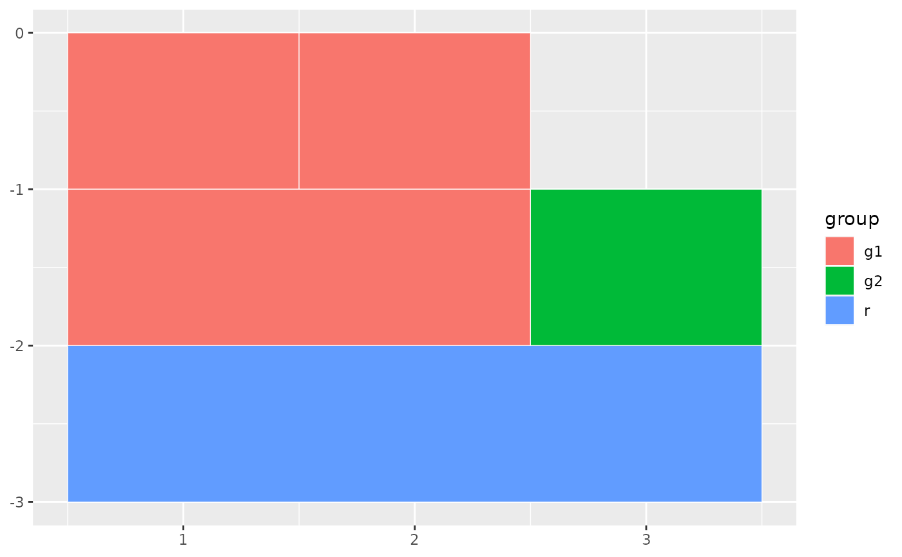
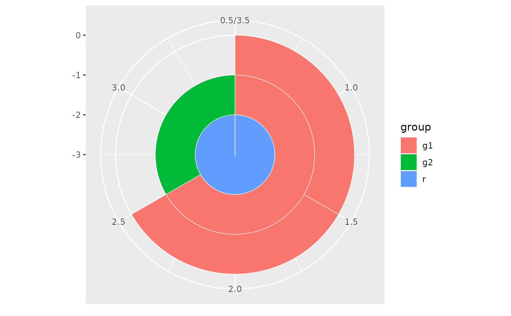

Creates a sunburst (or icicle) layer from a parent-child data.frame.
Uses StatSunburst to convert the hierarchy into rectangle coordinates
and GeomRect to render them.
Usage
geom_sunburst(
mapping = NULL,
data = NULL,
stat = "sunburst",
position = "identity",
...,
colour = "white",
linewidth = 0.2,
values = NULL,
branchvalues = "remainder",
leaf_mode = "actual",
na.rm = FALSE,
show.legend = NA,
inherit.aes = TRUE
)Arguments
- mapping
Set of aesthetic mappings. Required:
aes(id, parent). Map any node-identifier column toid(e.g.,aes(id = child)) and the parent column toparent. The root row should haveparent = NA. Optional:fill,colour,alpha.- data
A data.frame with at least
id(orchild/node) andparentcolumns. Extra columns are available for aesthetic mapping.- stat
The statistical transformation. Default
"sunburst".- position
Position adjustment. Default
"identity".- ...
Other arguments passed to the layer.
- colour
Border colour for rectangles. Default
"white".- linewidth
Border line width. Default
0.2.- values
Column name (string) for value-weighted sizing.
NULLfor equal weight. DefaultNULL.- branchvalues
How parent values relate to children.
"remainder"(default) or"total".- leaf_mode
How short branches are handled.
"actual"(default) or"extended".- na.rm
If
FALSE, missing values produce warnings. DefaultFALSE.- show.legend
Logical. Include this layer in legends?
- inherit.aes
If
TRUE, inherit aesthetics fromggplot().
Details
Add coord_polar() for a sunburst layout, or leave Cartesian for an
icicle layout. Fill mapping works via standard ggplot2 aesthetics.
See also
sunburst(), icicle() for the convenience-function API.
Examples
df <- data.frame(
parent = c(NA, "root", "root", "A", "A"),
child = c("root", "A", "B", "a1", "a2"),
group = c("r", "g1", "g2", "g1", "g1")
)
# Icicle (Cartesian)
ggplot2::ggplot(df) +
geom_sunburst(ggplot2::aes(id = child, parent = parent, fill = group))

# Sunburst (polar)
ggplot2::ggplot(df) +
geom_sunburst(ggplot2::aes(id = child, parent = parent, fill = group)) +
ggplot2::coord_polar()
